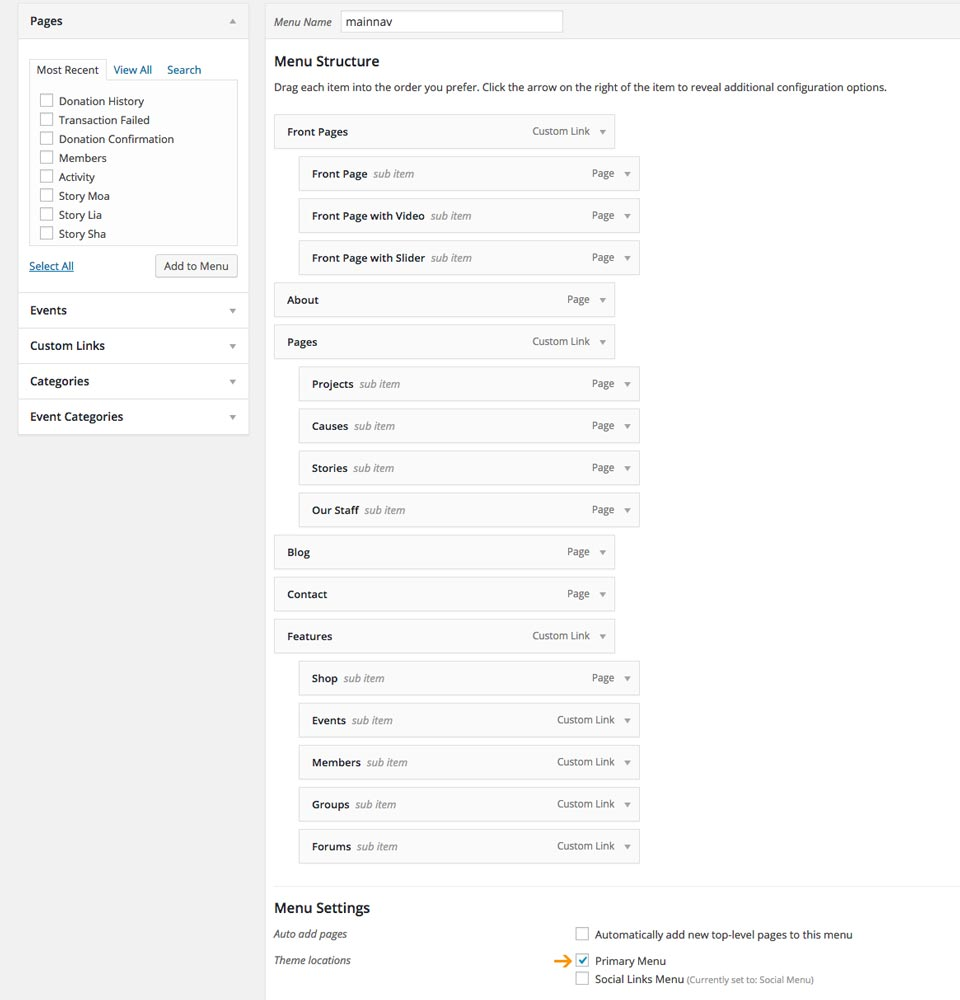
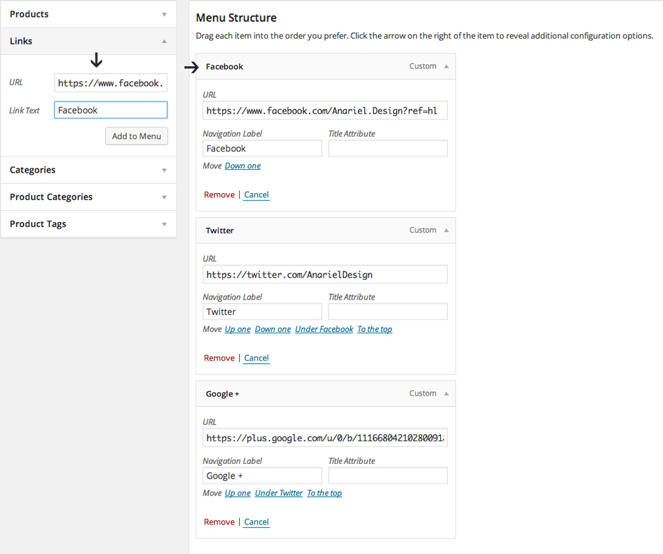

2.1 Main Menu
Navigate to the Appearance > Menu and add your menu. You can name it "mainnav"

In the Theme Locations check Primary Menu and save it.
2.2 Social
Navigate to the Appearance > Menu and add your menu. You can name it "Social Menu"

In the Theme Locations check Social Links Menu
2.2.1 How to add different social icons?
All you need is to add socials inside the "Links" menu. Inside the "URL" field add the social page url and inside the "Link Text" add the name of the social, for example "Facebook". After you add it to the menu, social icon will automatically show up inside the socials bar.
Available icons
Linking to any of the following sites will automatically display its icon in your menu.
Codepen
Digg
Dribbble
Facebook
Flickr
GitHub
Google+
Instagram
Linkedin
Pinterest
RSS Feed (urls with
/feed/)Tumblr
Twitter
Vimeo
WordPress
YouTube
